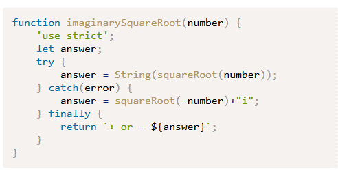

Notes Week 5
Ch 10 Testing and Debugging
FORMS Sitepoint :”JavaScript: novice to ninja”
Errors, Exceptions and Warnings
• System error ― there’s a problem with the system or external devices with which the program is interacting.
• Programmer error ― the program contains incorrect syntax or faulty logic; it could even be as simple as a typo.
• User error ― the user has entered data incorrectly, which the program is unable to handle.
Exceptions: error that allows the program to handle the error, sometimes with an error code
Stack Traces: a group or list of errors that help follow the trail to the error.
Warnings: code error that isn’t big enough to stop the program, but may cause it to run incorrectly
Testing and debugging are important during development because they need to happen in order to fix issues before production.
Strict Mode: operates code to find errors. Add ‘use strict’; to first line of code
Debugging in the browser
Use breakpoints to watch program run
Use alert() method to stop a program from running, ex alert(age); and will stop
Debugging with the console: console.log() or console.trace()
Debugging Tools;
Use browsers
Using keyword debugger before where you want it checked will show an error
Error Objects
“• EvalError is not used in the current ECMAScript specification and only retained for backwards compatibility. It was used to identify errors when using the global eval() function.
• RangeError is thrown when a number is outside an allowable range of values.
• ReferenceError is thrown when a reference is made to an item that doesn’t exist. For example, calling a function that hasn't been defined.
• SyntaxError is thrown when there’s an error in the code’s syntax.
• TypeError is thrown when there’s an error in the type of value used; for example, a string is used when a number is expected.
• URIError is thrown when there’s a problem encoding or decoding the URI.
• InternalError is a non-standard error that is thrown when an error occurs in the JavaScript engine. A common cause of this too much recursion.
“safe errors
• “The name property returns the name of the error constructor function used as a string, such as 'Error' or 'ReferenceError'.
• The message property returns a description of the error and should be provided as an argument to the Error constructor function.
• The stack property will return a stack trace for that error. This is a non-standard property and it’s recommended that it is not safe to use in production sites.”
Try, catch, and finally: these will run code inside their block and then catch any errors
